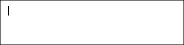
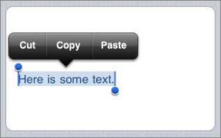

Welcome
This jQuery Mobile App is a tutorial of itself. In this tutorial, you will learn how to use HTML, CSS, jQuery, jQuery Mobile and Themeroller to create your own mobile app.
Start Tutorial
This jQuery Mobile App is a tutorial of itself. In this tutorial, you will learn how to use HTML, CSS, jQuery, jQuery Mobile and Themeroller to create your own mobile app.
Copy the code for this app by viewing the source for this page and pressing Ctrl+U on Windows or Alt+Cmd+U on Mac.
Modify the content of the various pages.

To add more steps, copy the step code block (follow the HTML comments in the source).

Once you've added more steps, change the previous steps' HTML. This involves editing the H1 tag for each step, as well as adding the Next button for the step that was last.
Back NextAdd the images to suit your steps. Also change the image URLs.
Back NextRoll your own ThemeRoller theme and replace the CSS filename on line 8 with your own. Don't forget to also change the CSS files.
BackMade by Noyan Balay • Version 2015.1